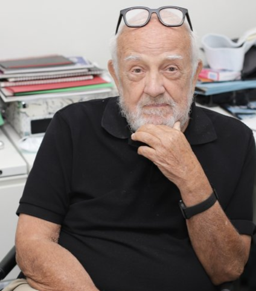

About Us

Oregon Harbor of Hope (OHOH) was founded by Homer Williams, a Portland real estate developer and businessman. In 2016, Williams was inspired after a trip to San Antonio where he toured Haven for Hope, a privately funded campus that delivers a centralized, compassionate and multi-service approach to the many difficulties facing San Antonio’s homeless population.
Williams and business activist Don Mazziotti quickly assembled a team to create Oregon Harbor of Hope, a 501(c)(3) nonprofit focused on developing special facilities featuring systems of care that meet the broad needs of the chronically homeless and unsheltered.
The city, county and state are working hard to address our crisis, but they cannot solve this problem alone. The private sector must get involved to help turn this problem around. This is our city. This is our home. These are our homeless. We can make a huge impact and give people hope. They need our help.